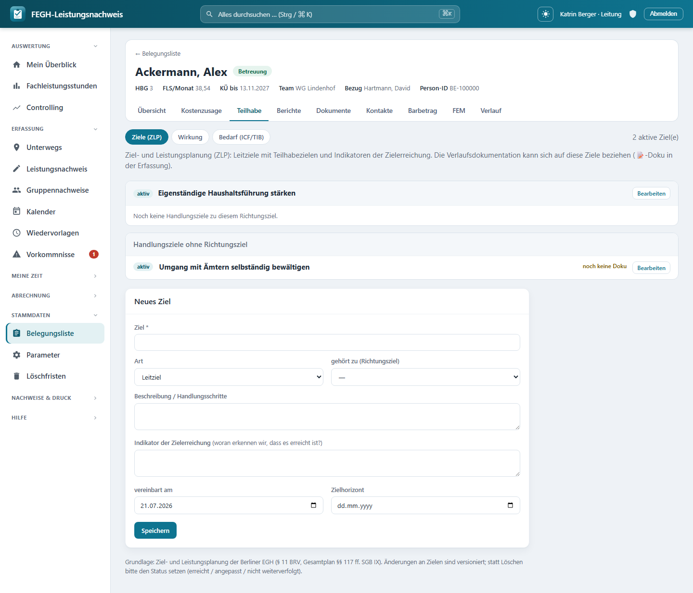

Ziele der Ziel- und Leistungsplanung (ZLP)¶

Ziele (Zielleistungsplanung) mit Status und Zielbezug für die Dokumentation.
Zu jeder Klientin kannst du die vereinbarten Ziele aus der Ziel- und Leistungsplanung (ZLP) pflegen – die fachliche Grundlage der Betreuung in der Berliner Eingliederungshilfe (§ 11 BRV EGH, Gesamtplan §§ 117 ff. SGB IX). Die App bildet die Berliner Systematik ab: Leitziele (die Richtung, im O-Ton der Person) mit darunter hängenden, operationalen Teilhabezielen, jeweils mit einem Indikator der Zielerreichung, einem Status und – für den Bericht – einem Zielerreichungsgrad in Prozent*. Deine Verlaufsdokumentation kann sich später gezielt auf diese Ziele beziehen, sodass sichtbar wird, an welchen Zielen tatsächlich gearbeitet wurde.
Du erreichst die Seite über die Fallakte einer Klientin: Reiter Teilhabe → Ziele (ZLP). Daneben liegen dort die Reiter Wirkung und Bedarf (ICF/TIB)*.
Berliner Terminologie: Leitziel und Teilhabeziel
Die Oberfläche folgt dem offiziellen Berliner ZLP-Formular des Gesamtplanverfahrens: Ein Leitziel beschreibt die grobe Richtung, ein Teilhabeziel (operational) ist ein konkretes, überprüfbares Unterziel mit Indikator. Intern heißen diese beiden Arten technisch noch richtungsziel und handlungsziel (Alt-Terminologie) – in der App und in dieser Anleitung siehst du aber die aktuellen Begriffe Leitziel/Teilhabeziel.
Aufbau der Seite¶
Oben zeigt eine Zeile die Zahl der aktiven Ziel(e) und verlinkt zu den Nachbarreitern (Wirkung, Bedarf). Darunter stehen die Ziele in dieser Struktur:
- Jedes Leitziel bildet einen Block mit Status-Kennzeichen, Titel und (falls gesetzt) dem Zielhorizont.
- Darunter hängen die zugehörigen Teilhabeziele – je mit Status, Titel, Indikator und einer Verlaufsspalte.
- Teilhabeziele ohne übergeordnetes Leitziel sammeln sich in einem eigenen Block „Teilhabeziele ohne Leitziel“.
Sind noch gar keine Ziele vereinbart, weist die Seite darauf hin, dass du unten das erste Leitziel anlegen kannst.
Zielverlauf: „vergessene“ Ziele aufdecken¶
Rechts an jedem Teilhabeziel steht eine Verlaufsspalte. Sie zählt, wie viele Verlaufsdoku-Einträge sich schon auf dieses Ziel beziehen, und zeigt das Datum der letzten Doku:
| Anzeige | Bedeutung |
|---|---|
| N Doku-Einträge · zuletzt TT.MM.JJJJ | Zu diesem Ziel gibt es N Verlaufstexte, der letzte vom genannten Datum |
| noch keine Doku (orange) | Auf dieses Ziel bezieht sich bisher kein Verlaufstext |
Woran erkenne ich unbearbeitete Ziele?
Der orange Hinweis „noch keine Doku“ macht sichtbar, welche Teilhabeziele vereinbart, aber noch nie in der Verlaufsdoku aufgegriffen wurden – nützlich vor Fallbesprechung oder Bericht, um keine Ziele aus dem Blick zu verlieren.
Ein Ziel anlegen oder bearbeiten¶
Unten auf der Seite liegt das Formular „Neues Ziel“. Klickst du bei einem bestehenden Ziel auf „Bearbeiten“, füllt sich dasselbe Formular mit dessen Werten (Überschrift „Ziel bearbeiten“, dazu ein „Abbrechen“-Link).
Diese Felder stehen zur Verfügung:
| Feld | Pflicht | Bedeutung |
|---|---|---|
| Ziel | ja | Der Titel/die Formulierung des Ziels (max. 200 Zeichen). Ohne Titel wird nicht gespeichert. |
| Art | – | Leitziel oder Teilhabeziel (operational). |
| gehört zu (Richtungsziel) | – | Ordnet ein Teilhabeziel einem Leitziel unter. Nur wirksam bei Art „Teilhabeziel“; Auswahl aus den vorhandenen Leitzielen. |
| Beschreibung / Handlungsschritte | – | Freitext zum Vorgehen. |
| Indikator der Zielerreichung | – | Woran erkennen wir, dass das Ziel erreicht ist? (Freitext) |
| vereinbart am | – | Datum der Zielvereinbarung (vorbelegt mit heute). |
| Zielhorizont | – | Bis wann das Ziel erreicht sein soll. |
| Status | – | Nur beim Bearbeiten sichtbar (siehe unten). |
| Zielerreichung % | – | Nur beim Bearbeiten sichtbar; 0–100, für den Informationsbericht. |
| Reihenfolge | – | Nur beim Bearbeiten sichtbar; steuert die Sortierung (0–999). |
Status, Zielerreichung % und Reihenfolge erst nach dem Anlegen
Beim neuen Ziel siehst du diese drei Felder noch nicht – ein frisch angelegtes Ziel ist automatisch aktiv. Sie erscheinen erst, wenn du das Ziel später über „Bearbeiten“ öffnest.
Wie Leitziel und Teilhabeziel zusammenhängen¶
- Ein Teilhabeziel kann über „gehört zu (Richtungsziel)“ einem Leitziel zugeordnet werden. Ohne Zuordnung landet es im Block „Teilhabeziele ohne Leitziel“.
- Änderst du die Art eines Leitziels, unter dem bereits Teilhabeziele hängen, auf Teilhabeziel, werden dessen Unterziele automatisch freigestellt (sie rutschen in „ohne Leitziel“). Die App meldet das ausdrücklich, damit nichts unbemerkt aus der Anzeige verschwindet.
- Ein Ziel kann niemals sich selbst übergeordnet sein – das verhindert die App.
Status setzen und Zielerreichung¶
Der Status dokumentiert den Stand eines Ziels. Es gibt vier Werte:
| Status | Bedeutung |
|---|---|
| aktiv | Ziel wird aktuell verfolgt |
| erreicht | Ziel ist erreicht |
| angepasst (fortgeschrieben) | Ziel wurde inhaltlich fortgeschrieben |
| nicht weiterverfolgt | Ziel wird nicht weiter bearbeitet |
Für den schnellen Wechsel gibt es direkt an jedem Teilhabeziel Knöpfe:
- Ist das Ziel aktiv, erscheint „✓ erreicht“ – ein Klick markiert es als erreicht.
- Sonst erscheint „↻ aktiv“ – ein Klick setzt es wieder auf aktiv.
Feiner steuerst du den Status im Bearbeiten-Formular über das Auswahlfeld „Status“.
Das Feld „Zielerreichung %“ (0–100) hältst du beim Bearbeiten fest. Es speist den Informationsbericht des örtlichen Trägers, der auswertet, inwieweit am Ende des Leistungszeitraums die Teilhabeziele erreicht wurden.
Löschen ist der Leitung vorbehalten – und selten der richtige Weg
Fachlich korrekt ist fast immer, den Status zu setzen (erreicht / angepasst / nicht weiterverfolgt), statt zu löschen – so bleibt die Historie der Ziel- und Leistungsplanung nachvollziehbar. Das Löschen (✕) sieht daher nur die Leitung, und die App fragt vor dem endgültigen Entfernen noch einmal nach. Für normale Betreuer*innen gibt es keinen Löschknopf.
Zielbezug der Verlaufsdokumentation¶
Der eigentliche Nutzen der Ziele entsteht, wenn sich die Verlaufsdoku darauf bezieht. Beim Schreiben eines Doku-Textes (📝 im Erfassungs-Grid, siehe Dokumentation) kannst du die aktiven Ziele der Klient*in auswählen, auf die sich der Eintrag bezieht. Diese Verknüpfung ist optional – Doku ohne Zielbezug bleibt möglich.
Genau aus diesen Verknüpfungen speist sich die Verlaufsspalte auf der Ziele-Seite (Anzahl Doku-Einträge, letztes Datum). So schließt sich der Kreis: geplante Ziele ↔ dokumentierte Arbeit.
Nur aktive Ziele im Doku-Bezug
Im Doku-Modal werden ausschließlich aktive Ziele zur Auswahl angeboten. Bereits erreichte oder nicht weiterverfolgte Ziele erscheinen dort nicht – der Zielbezug bleibt so auf die aktuell laufende Planung fokussiert.
Zugriff und Datenschutz¶
Team-Scoping
Die Ziele-Seite ist – wie die Verlaufsdoku – nur für Personen mit Klienten-Zugriff zu erreichen: Bezugsbetreuerin, Vertretung und Leitung des Teams (klienten_fuer(request.user)). Rollen ohne Klientenbezug – Verwaltung und Admin – haben hier keinen Zugriff, weil ihre Klientenliste bewusst leer ist (DSGVO-Trennung). Der Versuch, Ziele einer fremden Klientin zu öffnen oder zu speichern, wird serverseitig abgewiesen.
Besonders schützenswerte Daten (Art. 9 DSGVO)
Ziel-Freitexte (Titel, Beschreibung, Indikator) sind personenbezogene Gesundheits-/Sozialdaten. Sie werden datensparsam behandelt: Änderungen an Zielen sind zwar versioniert (Fortschreibung nachvollziehbar), die schützenswerten Freitexte werden aber bewusst NICHT in die Historientabelle geschrieben – so überdauern sie das Löschkonzept nicht. Wird eine Klient*in anonymisiert, verschwinden mit ihr auch die Ziele, ohne Freitext-Rückstände in der History.
Für Neugierige: Technik dahinter¶
Nur zur Nachvollziehbarkeit
Diese Seite dient dem Verständnis; für die Bedienung brauchst du sie nicht. Die Namen unten entsprechen dem echten Code.
- Seiten-View:
nachweis/views_ziele.py→ziele(request, pk). Lädt die Klient*in überservices.klienten_fuer(request.user), gruppiert die Ziele in Leitziele (ZielArt.RICHTUNGSZIEL) mit Kindern und „freie“ Teilhabeziele, zählt aktive Ziele (n_aktiv) und annotiert je Zieldoku_anzahl/doku_zuletzt(Aggregat überleistungenmitdokumentation__gt=""). - Speichern:
ziel_speichern(POST). Validiert Titel, setzt Art/Übergeordnetes (verhindert Selbstzyklus per.exclude(pk=z.pk)), stellt Unterziele beim Art-Wechsel frei, begrenzterreicht_gradauf 0–100 undreihenfolgeauf 0–999. - Schnell-Status:
ziel_status(POST) für „✓ erreicht“ / „↻ aktiv“; schreibt nurstatus+geaendert. - Löschen:
ziel_loeschen(POST) – hinterservices.ist_leitung(request.user), sonstHttpResponseForbidden. - Doku-Bezug:
api_ziele(GET) liefert dem Doku-Modal die aktiven Ziele (id,titel,art) viaklient.ziele.filter(status=ZielStatus.AKTIV). - Modelle:
nachweis/models.py→Ziel(klient,art,uebergeordnetals Selbst-FK,titel,beschreibung,indikator,status,erreicht_grad,gueltig_von/gueltig_bis,reihenfolge;HistoricalRecords(excluded_fields=["titel", "beschreibung", "indikator"])). Auswahllisten:ZielArt(Leitziel/Teilhabeziel) undZielStatus(aktiv/erreicht/angepasst/nicht weiterverfolgt). Der Zielbezug der Doku hängt anLeistung.ziele(ManyToManyField("Ziel")). - Template:
nachweis/templates/nachweis/ziele.html(Blöcke pro Leitziel, Verlaufsspalte, Anlege-/Bearbeiten-Formular). Reiter Wirkung/Bedarf über diefa-subnav. - URLs:
nachweis/urls.py→nachweis:ziele,nachweis:ziel_speichern,nachweis:ziel_status,nachweis:ziel_loeschen,nachweis:api_ziele.